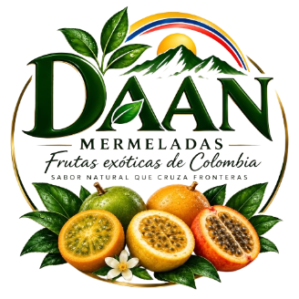

Fruta madura
Esperamos a que cada fruta esté en su punto antes de cortarla.

Sabores Proceso Precios Juego Preguntas PedirMermeladas gourmet de maracuyá, lulo y granadilla. Cocinadas despacio, en lotes pequeños y listas para tu desayuno.
Conocer los sabores Hacer mi pedidoCada frasco nace de una fruta distinta. Toca un sabor.
Poca magia: buena fruta, tiempo y cuidado.
Esperamos a que cada fruta esté en su punto antes de cortarla.
Fuego bajo y paciencia para que el sabor no se queme.
Pocos frascos por tanda, todos revisados a mano.
Se siente la fruta en cada cucharada, no solo el azúcar.
Pan, yogur, quesos o postres. Pruébala donde quieras.
Escribes por WhatsApp y coordinamos la entrega contigo.
Una mirada rápida a lo que cambia.
| Detalle | De góndola | Gourmet |
|---|---|---|
| Fruta | Poca y muy procesada | Con trozos y pulpa real |
| Producción | Grandes volúmenes | Lotes de 40 frascos |
| Cocción | Rápida | Lenta, a fuego bajo |
| Sabores | Los de siempre | Maracuyá, lulo y granadilla |
| Compra | En el supermercado | Directo por WhatsApp |
Así se hace cada lote.
Escogemos la fruta madura, sin golpes.
Todo se hace a mano, fruta por fruta.
Cuatro horas a fuego lento hasta que cuaja.
Se envasa caliente y sale en tu pedido.
Precios en dólares (USD); debajo, entre paréntesis, el equivalente en pesos colombianos.
Elige la presentación y el tipo de compra. Los precios van en dólares y, debajo, en pesos. Al enviar, se abre WhatsApp con el mensaje listo.
Mueve el frasco con el mouse, el dedo o las flechas ← →. Cada fruta que atrapas abre un pedacito de su historia, y entre más atrapes, mayor es tu descuento.